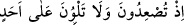

biridir. Tek başına ve orada bulunan öteki dağlardan ayrı olduğu için bu dağa Uhud adı
verilmiştir. Hz. Hamza (r.a) ve orada medfun diğer şehidleri (r.anhüm) ziyaret
maksadıyla bu dağa gidilmektedir. Dağ Medine’ye iki ya da üç mil uzaklıktadır.
İmam Süyûtî, Uhud dağının üstünlüğüne şu âyetteki “Ehad” kelimesini “Uhud”
şeklinde okuyan kırâate göre bu dağın Kur’an’da geçmesini delil göstermektedir: “
Hani (savaş alanından) uzaklaşıyor, Uhud’a dönüp
bakmıyordunuz.” (Âl-i İmran, 3/153) Yine Süyûtî şu hadisleri de Uhud dağının
üstünlüğüne delil göstermektedir: “Uhud, cennetin rükünlerinden biridir.”[131] Yani
cennetteki bölgelerden büyük bir bölgedir. “Şu Uhud öyle bir dağdır ki o bizi sever, biz
de onu severiz. Yolunuz o tarafa düştüğünde dikenli de olsa oradaki ağaçlardan
yiyiniz.”[132] Maksad, teberrük kasdıyla Uhud’un ağaçlarının meyvesinden yemeyi ihmâl
etmemeye teşviktir. Dağın bu sevgisinin gerçek mânâda bir sevgi olmasına engel bir
durum da yoktur. Dağların Davud (a.s.)’la birlikte tesbih ettiği, “Kimi taşlar da vardır
ki Allah korkusundan aşağı yuvarlanırlar.” (el-Bakara, 2/174) âyetinde taşların
haşyet duyduğu zikredildiği gibi hadiste de Uhud’un Hz. Peygamber (s.a.)’e sevgi
beslediği belirtilmiştir. İnsânü’l-uyûn’da böyle geçmektedir.
Fakir (Bursevî) der ki: Ehlüllaha göre, cansız maddelerin gerçek bir hayatı vardır.
Nitekim Mesnevî’de şöyle denilir:
Eğer Allah rüzgâra gözsüz bir görüş vermeseydi.
Âd Kavmi inananları ile inanmayanlarını ayırt edebilir miydi?
Nil nehrinde o ilâhî nûr, o göz, o görüş bulunmasaydı,
Kıbtî ile Sıptî’yi hiç seçebilir miydi?
Dağların taşların görür gözleri, işitir kulakları olmasaydı,
Dâvud (a.s.) Zebur okurken onunla dost olurlar mıydı?
Eğer şu yeryüzünün can gözü olmasaydı,
Kârûn’u nasıl sömürüp yutardı?
Böylece “Ey yer, ey semâ” gibi âyetlerde bulunan nidâların ulema-i billah’a göre
hakiki nidâlar olduğunu anladın. “Denildi” ifadesinden anlaşılan “Allah’ın demesi” de
yine hakiki bir demedir.
Hz. Şeyh-i Ekber (k.s.) der ki: “Allah Teâlâ, kendi celâline yaraşır bir şekil ve
surette tecelli etti.” dediğimiz gibi, yine “Kendi celâline yaraşır bir şekilde ses ve
harfle konuştu.” da deriz. Allah Teâlâ’nın kelâmı, bir mertebede konuşanın bizzat
kendisi; başka bir mertebede kelâm-ı nefsî gibi kendi zâtıyla kâim bir mânâdır. Allah’ın
kelâmı misal ve his âlemlerinde harflerden mürekkebdir ve onlarla taayyün bulur. Molla
Câmî’nin ed-Dürratü’l-fâhira’sında böyle geçmektedir.
Nûh (a.s.), gemiden Cûdî’ye Aşûrâ günü inmiştir.
Katâde’den şöyle nakledilmiştir: “Mü’minler gemiden Receb’in onunda ayrıldılar.